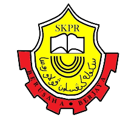
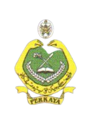

I studied at Sk pulau rusa from 2007 till 2012. I got 2A 3B during my Upsr

During high school, I studied at one of the private schools in Terengganu. When I was in form 3, I took 10 subjects in PT3, but I only got 5As. While in form five, I took 11 subjects, which were the principles of accounting, Islamic shariah, Arabic language, Quran Sunnah and many more. At that time, I only got 2As, but that did not break my spirit to further my studies at the university level.
 I got an offer to continue my studies at the diploma level. I am so happy that I got the first choice while I was filling out the UPU. A moment of time passed. Now I have reached the end of my diploma. I hope I will get the cgpa I want and also be able to further my studies at degree level..
I got an offer to continue my studies at the diploma level. I am so happy that I got the first choice while I was filling out the UPU. A moment of time passed. Now I have reached the end of my diploma. I hope I will get the cgpa I want and also be able to further my studies at degree level..